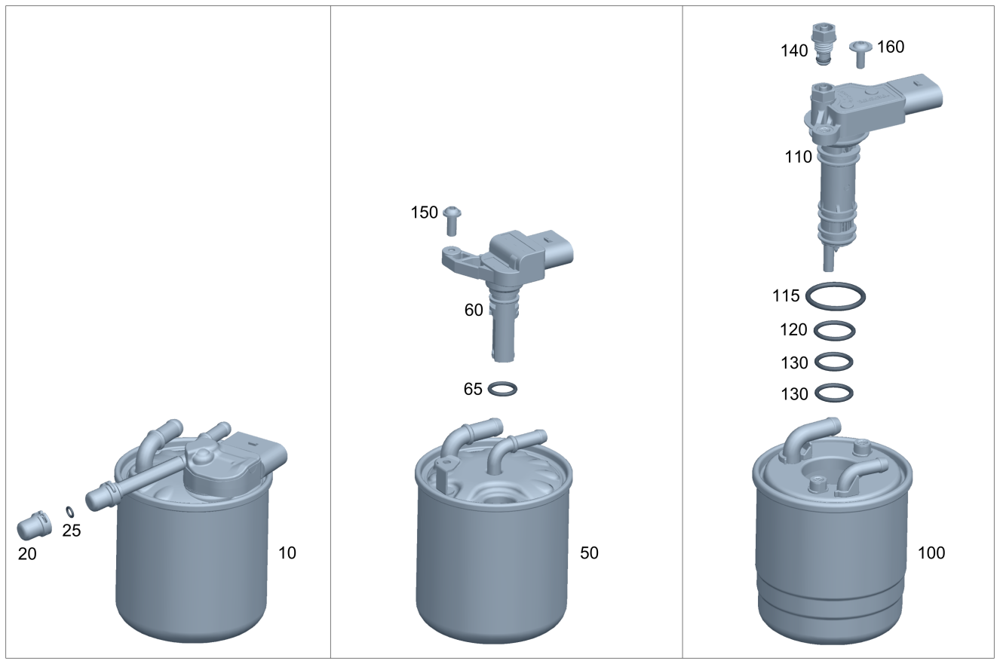

| № | Артикул | Название | Кол. | Примечание | Ограничение |
|---|---|---|---|---|---|
| 10 | A 651 090 16 52 | Топливный фильтр (FUEL FILTER) | 1 | [002930] ВНИМАНИЕ! ПЕРЕД ЗАКАЗОМ НЕОБХОДИМО ОПРЕДЕЛИТЬ НОМЕР УСТАНОВЛЕННОЙ НА А/М ДЕТАЛИ | F166/F172/F204/F207/F212/F205/F218/F222/F221 |
| 10 | A 651 090 28 52 | Топливный фильтр (FUEL FILTER) | 1 | [002930] ВНИМАНИЕ! ПЕРЕД ЗАКАЗОМ НЕОБХОДИМО ОПРЕДЕЛИТЬ НОМЕР УСТАНОВЛЕННОЙ НА А/М ДЕТАЛИ | F166/F172/F204/F207/F212/F205/F218/F222/F221 |
| 10 | A 651 090 16 52 | Топливный фильтр (FUEL FILTER) | 1 | [002930] ВНИМАНИЕ! ПЕРЕД ЗАКАЗОМ НЕОБХОДИМО ОПРЕДЕЛИТЬ НОМЕР УСТАНОВЛЕННОЙ НА А/М ДЕТАЛИ | F253+-064 |
| 10 | A 651 090 28 52 | Топливный фильтр (FUEL FILTER) | 1 | [002930] ВНИМАНИЕ! ПЕРЕД ЗАКАЗОМ НЕОБХОДИМО ОПРЕДЕЛИТЬ НОМЕР УСТАНОВЛЕННОЙ НА А/М ДЕТАЛИ | F253+-064 |
| 20 | A 000 998 11 22 | - Уплотнительный колпачок | 1 | (F090/F166/F172/F204/F207/F212/F205/F218/F221/F222/F253)+-M013 | |
| 20 | A 000 998 11 22 | - Уплотнительный колпачок | 1 | F253+M013 | |
| 25 | A 022 997 76 45 | - Кольцевая прокладка (O-RING) | 1 | F090/F166/F172/F204/F207/F212+-M013/F213/F205/F218/F221/F222/F253 | |
| 110 | A 000 159 34 04 | Нагревательный элемент (HEATING ELEMENT) | 1 | С датчиком уровня охлаждающей жидкости и нагревателем 180Вт | (F166/F172/F204/F207/F212+-M020/F218/F221/F222)+U41/F212+FW+(800/801)/F204+M005+030+FX |
| 200 | A 651 070 89 32 | Топливопровод (FUEL LINE) | 1 | Подводящий и обратный трубопровод к топливному баку | F222 |
| 200 | A 651 070 11 35 | Топливопровод (FUEL LINE) | 1 | Подводящий и обратный трубопровод к топливному баку | F222 |
| 200 | A 651 070 95 32 | Топливопровод (FUEL LINE) | 1 | Подводящий и обратный трубопровод к топливному баку | F205/F253 |
| 200 | A 651 070 12 35 | Топливопровод (FUEL LINE) | 1 | Подводящий и обратный трубопровод к топливному баку | F205/F253 |
| 220 | A 651 070 39 81 | Топливный шланг (FUEL HOSE) | 1 | Подводящий трубопровод (от фильтра к насосу высокого давления) | F090/F166/F172/F204/F205/F207/F212/F213/F218/F221/F222/F253/F447/F639/F906/F907 |
| 230 | N 000000 004683 | - Хомут (CLAMP) | 2 | ||
| 240 | N 000000 007915 | - Хомут (CLAMP) | 2 | ||
| 250 | A 004 542 16 18 | - Датчик давления (PRESSURE SENSOR) | 1 | F090/F166/F172/F204/F205/F207/F212/F218/F221/F222/F253/F447/F639/F907/F906+-(M006/929K/937K) | |
| 260 | A 001 546 00 43 | Держатель (HOLDER) | 1 | Топливная дренажная трубка на крышке клапанного механизма | A11 |
| 300 | A 651 070 54 81 | Топливный шланг (FUEL HOSE) | 1 | Топливопровод к корпусу клапанов | A11 |
| 300 | A 651 070 04 00 | Топливный шланг (FUEL HOSE) | 1 | Топливопровод к корпусу клапанов | A11+-F447 |
| 310 | A 001 991 58 70 | - Пружинная скоба (SPRING CLIP) | 1 | A11 | |
| 320 | N 910143 006000 | Винт с 6-гр. глвк (HEXALOBULAR SCREW) | 1 | Топливная дренажная трубка к распределителю топлива; M6X12 | F166/F172/F204/F205/F207/F212/F213/F218/F221/F222/F253/F447/F636/F639/F900/F906/F907 |
| 350 | A 651 070 32 81 | Топливный шланг | 1 | Топливопровод к корпусу клапанов | (F090/F172/F207/F218/F221/F639/F636/F447/F166/F204/F205/F212/F222/F906/F907)+-A11 |
| 350 | A 651 070 64 81 | Топливный шланг (FUEL HOSE) | 1 | Топливопровод к корпусу клапанов | (F090/F172/F207/F218/F221/F639/F636/F447/F166/F204/F205/F212/F222/F906/F907)+-A11 |
| 360 | A 000 995 54 75 | Проставка (SPACER) | 2 | Топливная дренажная трубка к топливопроводу | 064/F090/(F204/F212)+M013/F636/F639/F900/(F447/F906/F907)+-A11 |
| 370 | A 004 997 20 90 | Хомут для шланга (HOSE CLAMP) | 2 | 14.5\-15.5 MM | F090/F166/F172/F204/F205/F207/F212/F218/F221/F222/F253/F447/F636/F639/F906/F907 |
| 380 | A 006 997 18 90 | Хомут для шланга (HOSE CLAMP) | 1 | Топливный шланг к ТНВД; 13\-14.5 MM | F090/F166/F172/F204/F205/F207/F212/F213/F218/F221/F222/F253/F447/F639/F906/F907 |
| 380 | A 006 997 18 90 | Хомут для шланга (HOSE CLAMP) | 1 | Топливный шланг к фильтру; 13\-14.5 MM | F090/F166/F172/F204/F205/F207/F212/F213/F218/F221/F222/F253/F447/F639/F906/F907 |
| 380 | A 006 997 18 90 | Хомут для шланга (HOSE CLAMP) | 1 | Топливный шланг к фильтру; 13\-14.5 MM | F090/F166/F172/F204/F205/F207/F212/F213/F218/F221/F222/F253/F447/F639/F906/F907 |
| 390 | A 651 078 27 41 | Держатель (HOLDER) | 1 | Топливный шланг | F090/F166/F172/F204/F205/F207/F212/F218/F221/F222/F253/F447/F636/F639/F900/F906 |
| 390 | A 651 078 34 41 | Держатель | 1 | Топливный шланг | F090/F166/F172/F204/F205/F207/F212/F218/F221/F222/F253/F447/F636/F639/F900/F906 |
| 390 | A 651 078 06 00 | Держатель (HOLDER) | 1 | Топливный шланг | F090/F166/F172/F204/F205/F207/F212/F218/F221/F222/F253/F447/F636/F639/F900/F906 |
| 390 | A 651 078 07 00 | Держатель (HOLDER) | 1 | Топливный шланг | F090/F166/F172/F204/F205/F207/F212/F218/F221/F222/F253/F447/F636/F639/F900/F906/F907 |
| 395 | A 651 078 12 41 | Держатель (HOLDER) | 1 | Топливный шланг на распределительном воздуховоде наддувочного воздуха | F090/F166/F172/F204/F205/F207/F212/F213/F218/F221/F222/F253/F447/F639/F900/F906/F907 |
| 400 | A 651 078 31 81 | Топливный шланг (FUEL HOSE) | 1 | Насос высокого давления к топливопроводу | F204+(460/494)/F205/F212+M014+(460/494)/F213/F222/F253 |
| 400 | A 651 078 31 81 | Топливный шланг (FUEL HOSE) | 1 | Насос высокого давления к топливопроводу | F090/F172/F204/F205/F207/F212/F218/F222/F253/(F906/F907)+943K |
| 400 | A 651 078 31 81 | Топливный шланг (FUEL HOSE) | 1 | Насос высокого давления к топливопроводу | F090/F172/F204/F205/F207/F212/F218/F222/F253/F906+943K |
| 400 | A 651 078 31 81 | Топливный шланг (FUEL HOSE) | 1 | Насос высокого давления к топливопроводу | F090/F172/F204/F205/F207/F212/F218/F222/F253/F906+943K/F907 |
| 410 | A 004 997 20 90 | Хомут для шланга (HOSE CLAMP) | 2 | Крепление топливного шланга; 14.5\-15.5 MM | F090/F166/F172/F204/F205/F207/F212/F213/F218/F221/F222/F253/F447/F636/F639/F900/F906/F907 |
| 420 | N 910143 006001 | Винт с 6-гр. глвк (HEXALOBULAR SCREW) | 1 | Обратный трубопровод к держателю; M6X16 | F166/F172/F204/F205/F207/F212/F218/F221/F222/F447/F636/F639/F906/F900/F907 |
| 420 | N 910143 006001 | Винт с 6-гр. глвк (HEXALOBULAR SCREW) | 1 | Обратный трубопровод к держателю; M6X16 | F253 |
| 420 | N 910143 006000 | Винт с 6-гр. глвк (HEXALOBULAR SCREW) | 1 | Топливопровод к проушине для вывешивания; M6X12 | F090/F166/F172/F204/F205/F207/F212/F218/F221/F222/F253/F447/F636/F639/F906/F900/F907 |
| 430 | N 910143 006000 | Винт с 6-гр. глвк (HEXALOBULAR SCREW) | 1 | Топливопровод к картеру газораспределительного механизма; M6X12 | F090/F166/F172/F204/F205/F207/F212/F218/F221/F222/F253/F447/F636/F639/F906/F900/F907 |
| 440 | A 651 070 05 81 | Топливный шланг (FUEL HOSE) | 1 | F090/F166/F172/F204/F205/F207/F212/F218/F221/F222/F253/F447/F636/F639/F900/F906/F907 | |
| 440 | A 651 070 65 81 | Топливный шланг (FUEL HOSE) | 1 | F090/F166/F172/F204/F205/F207/F212/F218/F221/F222/F253/F447/F636/F639/F900/F906 | |
| 440 | A 651 070 65 81 | Топливный шланг (FUEL HOSE) | 1 | F090/F166/F172/F204/F205/F207/F212/F218/F221/F222/F253/F447/F636/F639/F900/F906/F907 | |
| 450 | A 006 997 18 90 | Хомут для шланга (HOSE CLAMP) | 2 | Крепление шланга к кольцевому штуцеру и топливопроводу; 13\-14.5 MM | F090/F166/F172/F204/F205/F207/F212/F218/F221/F222/F253/F447/F636/F639/F900/F906/F907 |
| 480 | A 651 078 20 41 | Держатель (HOLDER) | 1 | F090/F166/F172/F204/F205/F207/F212/F218/F222/F253/F447/F636/F639/F900/F906/F907 | |
| 490 | A 651 078 16 41 | - Держатель (HOLDER) | 1 | F090/F166/F172/F204/F205/F207/F212/F213/F218/F221/F222/F253/F447/F636/F639/F900/F906/F907 | |
| 500 | A 651 078 05 41 | - Держатель (HOLDER) | 1 | F090/F166/F172/F204/F205/F207/F212/F213/F218/F221/F222/F447/F639/F900/F906/F907 | |
| 500 | A 651 078 05 41 | - Держатель (HOLDER) | 1 | F090/F166/F172/F204/F205/F207/F212/F213/F218/F221/F222/F447/F639/F900/F906 | |
| 520 | A 651 078 02 31 | - Сборный штуцер (COLLECTOR FITTING) | 1 | F090/F166/F172/F204/F205/F207/F212/F213/F218/F222/F253/F447/F636/F639/F900/F906/F907 | |
| 600 | A 651 070 01 32 | Дренажный топливопровод (LEAK FUEL LINE) | 1 | (064/F090/(F204/F212)+M013/F636/F639/F900/F906/F907)+-A11 | |
| 600 | A 651 070 55 32 | Дренажная трубка (LEAK OIL LINE) | 1 | A11/(F906/F907)+A11+(943K/935) | |
| 610 | A 651 070 24 32 | Дренажная трубка (LEAK OIL LINE) | 1 | Ремонтное решение с соединительным патрубком; REPARATURLÖSUNG MIT VERBINDUNGSSTUTZEN | 064 |
| 620 | A 000 995 00 68 | хомут (CLAMP) | 1 | Топливная дренажная трубка к топливопроводу | 064/F090/(F204/F212)+M013/F636/F639/F900/(F906/F907)+-A11 |
| 630 | A 651 070 63 81 | Топливный шланг (FUEL HOSE) | 1 | 70O/F212+70O/F204+70O | |
| 640 | A 651 070 76 32 | - Дренажная трубка | 1 | 70O | |
| 650 | A 651 070 00 27 | - Корпус клапанов | 1 | 70O | |
| 660 | A 651 078 29 81 | - Топливный шланг (FUEL HOSE) | 1 | 70O | |
| 670 | A 651 070 17 30 | - Соединительный корпус | 1 | 70O | |
| 680 | A 006 997 18 90 | - Хомут для шланга (HOSE CLAMP) | 2 | К корпусу клапанов; 13\-14.5 MM | 70O |
| 680 | A 006 997 18 90 | - Хомут для шланга (HOSE CLAMP) | 1 | Топливный шланг на клапане; 13\-14.5 MM | 70O |
| 690 | A 651 078 30 81 | - Топливный шланг (FUEL HOSE) | 1 | 70O | |
| 695 | A 006 997 18 90 | Хомут для шланга (HOSE CLAMP) | 1 | Топливный шланг на полом болте; 13\-14.5 MM | 70O |
| 700 | A 651 078 27 81 | Топливный шланг (FUEL HOSE) | 1 | 70O | |
| 700 | A 651 078 28 81 | Топливный шланг (FUEL HOSE) | 1 | TO A 642 090 18 52 | 70O |
| 710 | A 006 997 18 90 | Хомут для шланга (HOSE CLAMP) | 2 | Топливный шланг к фильтру; 13\-14.5 MM | 70O |
| 720 | A 000 997 11 67 | Полый болт (HOLLOW SCREW) | 1 | 70O | |
| 730 | N 000000 006035 | Уплотнительное кольцо (SEALING RING) | 2 | 70O | |
| 750 | A 001 995 17 75 | Проставка (SPACER) | 1 | 70O | |
| 760 | A 006 997 18 90 | Хомут для шланга (HOSE CLAMP) | 1 | Соединительный корпус на подводящем штуцере ТНВД; 13\-14.5 MM | 70O |
Позиций: 71 · подписано на схемах: 71 · колесо — плавный зум в курсор, перетаскивание — пан, двойной клик — зум, клик по артикулу — скопировать.